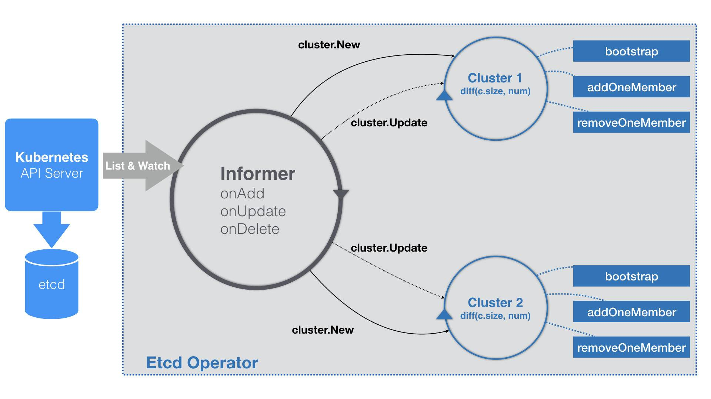

ETCD Operator
在 Kuernetes 生态中，Operator可以更加灵活和编程友好的管理“有状态应用”的 比如 数据库
快速试用
https://github.com/coreos/etcd-operator
$ git clone https://github.com/coreos/etcd-operator
$ example/rbac/create_role.sh这个脚本的作用，就是为 Etcd Operator 创建 RBAC 规则。这是因为，Etcd Operator 需要访问 Kubernetes 的 APIServer 来创建对象
- 对 Pod、Service、PVC、Deployment、Secret 等 API 对象，有所有权限；
- 对 CRD 对象，有所有权限；
- 对属于 etcd.database.coreos.com 这个 API Group 的 CR（Custom Resource）对象，有所有权限。
而 Etcd Operator 本身，其实就是一个 Deployment，它的 YAML 文件如下所示：
apiVersion: extensions/v1beta1
kind: Deployment
metadata:
name: etcd-operator
spec:
replicas: 1
template:
metadata:
labels:
name: etcd-operator
spec:
containers:
- name: etcd-operator
image: quay.io/coreos/etcd-operator:v0.9.4
command:
- etcd-operator
# Uncomment to act for resources in all namespaces. More information in doc/user/clusterwide.md
#- -cluster-wide
env:
- name: MY_POD_NAMESPACE
valueFrom:
fieldRef:
fieldPath: metadata.namespace
- name: MY_POD_NAME
valueFrom:
fieldRef:
fieldPath: metadata.name$ kubectl get pods
NAME READY STATUS RESTARTS AGE
etcd-operator-649dbdb5cb-bzfzp 1/1 Running 0 20s
$ kubectl get crd
NAME CREATED AT
etcdclusters.etcd.database.coreos.com 2019-03-01T18:42:55Z这个 CRD 名叫etcdclusters.etcd.database.coreos.com 。你可以通过 kubectl describe 命令看到它的细节，如下所示：
$ kubectl describe crd etcdclusters.etcd.database.coreos.com
...
Group: etcd.database.coreos.com
Names:
Kind: EtcdCluster
List Kind: EtcdClusterList
Plural: etcdclusters
Short Names:
etcd
Singular: etcdcluster
Scope: Namespaced
Version: v1beta2
...通过上述步骤创建 etcd.database.coreos.com API 组（Group）
如果有API 资源类型（Kind）是“EtcdCluster”的 YAML 文件被提交上来 K8s将会识别
提交 EtcdCluster
$ kubectl apply -f example/example-etcd-cluster.yaml
$ kubectl get pods
NAME READY STATUS RESTARTS AGE
example-etcd-cluster-dp8nqtjznc 1/1 Running 0 1m
example-etcd-cluster-mbzlg6sd56 1/1 Running 0 2m
example-etcd-cluster-v6v6s6stxd 1/1 Running 0 2m
example-etcd 如果被创建出来
Operator 的工作原理，实际上是利用了 Kubernetes 的自定义 API 资源（CRD），来描述想要部署的“有状态应用”；然后在自定义控制器里，根据自定义 API 对象的变化，来完成具体的部署和运维工作。
Etcd Operator 部署 Etcd 集群，采用的是静态集群（Static）的方式。
静态集群的好处是，它不必依赖于一个额外的服务发现机制来组建集群，非常适合本地容器化部署。而它的难点，则在于你必须在部署的时候，就规划好这个集群的拓扑结构，并且能够知道这些节点固定的 IP 地址。比如下面这个例子：
$ etcd --name infra0 --initial-advertise-peer-urls http://10.0.1.10:2380 \
--listen-peer-urls http://10.0.1.10:2380 \
...
--initial-cluster-token etcd-cluster-1 \
--initial-cluster infra0=http://10.0.1.10:2380,infra1=http://10.0.1.11:2380,infra2=http://10.0.1.12:2380 \
--initial-cluster-state new
$ etcd --name infra1 --initial-advertise-peer-urls http://10.0.1.11:2380 \
--listen-peer-urls http://10.0.1.11:2380 \
...
--initial-cluster-token etcd-cluster-1 \
--initial-cluster infra0=http://10.0.1.10:2380,infra1=http://10.0.1.11:2380,infra2=http://10.0.1.12:2380 \
--initial-cluster-state new
$ etcd --name infra2 --initial-advertise-peer-urls http://10.0.1.12:2380 \
--listen-peer-urls http://10.0.1.12:2380 \
...
--initial-cluster-token etcd-cluster-1 \
--initial-cluster infra0=http://10.0.1.10:2380,infra1=http://10.0.1.11:2380,infra2=http://10.0.1.12:2380 \
--initial-cluster-state new在这个例子中，启动了三个 Etcd 进程，组成了一个三节点的 Etcd 集群。
其中，这些节点启动参数里的–initial-cluster 参数，非常值得你关注。它的含义，正是当前节点启动时集群的拓扑结构。说得更详细一点，就是当前这个节点启动时，需要跟哪些节点通信来组成集群。
Etcd 集群创建分析
EtcdCluster 这个 CRD 的定义，它对应的 types.go 文件的主要内容，如下所示：
// +genclient
// +k8s:deepcopy-gen:interfaces=k8s.io/apimachinery/pkg/runtime.Object
type EtcdCluster struct {
metav1.TypeMeta `json:",inline"`
metav1.ObjectMeta `json:"metadata,omitempty"`
Spec ClusterSpec `json:"spec"`
Status ClusterStatus `json:"status"`
}
type ClusterSpec struct {
// Size is the expected size of the etcd cluster.
// The etcd-operator will eventually make the size of the running
// cluster equal to the expected size.
// The vaild range of the size is from 1 to 7.
Size int `json:"size"`
...
}可以看到，EtcdCluster 是一个有 Status 字段的 CRD。在这里，可以不必关心 ClusterSpec 里的其他字段，只关注 Size（即：Etcd 集群的大小）字段即可。
Size 字段的存在，就意味着将来如果想要调整集群大小的话，应该直接修改 YAML 文件里 size 的值，并执行 kubectl apply -f。
这样，Operator 就会完成 Etcd 节点的增删操作。这种“scale”能力，也是 Etcd Operator 自动化运维 Etcd 集群需要实现的主要功能。
而为了能够支持这个功能，不再像前面那样在–initial-cluster 参数里把拓扑结构固定死。
所以，Etcd Operator 的实现，虽然选择的也是静态集群，但这个集群具体的组建过程，是逐个节点动态添加的方式，即：
首先，Etcd Operator 会创建一个“种子节点”；
然后，Etcd Operator 会不断创建新的 Etcd 节点，然后将它们逐一加入到这个集群当中，直到集群的节点数等于 size。
ETCDOperator创建集群可以分为俩个步骤
Bootstrap
infra0 节点为例，它的 IP 地址是 10.0.1.10，那么 Etcd Operator 生成的种子节点的启动命令，如下所示：$ etcd --data-dir=/var/etcd/data --name=infra0 --initial-advertise-peer-urls=http://10.0.1.10:2380 --listen-peer-urls=http://0.0.0.0:2380 --listen-client-urls=http://0.0.0.0:2379 --advertise-client-urls=http://10.0.1.10:2379 --initial-cluster=infra0=http://10.0.1.10:2380 --initial-cluster-state=new --initial-cluster-token=4b5215fa-5401-4a95-a8c6-892317c9bef8，这个种子节点的 initial-cluster-state 是 new，并且指定了唯一的 initial-cluster-token 参数。
- AddNode
etcdctl member add infra1 http://10.0.1.11:2380
$ etcd
--data-dir=/var/etcd/data
--name=infra1
--initial-advertise-peer-urls=http://10.0.1.11:2380
--listen-peer-urls=http://0.0.0.0:2380
--listen-client-urls=http://0.0.0.0:2379
--advertise-client-urls=http://10.0.1.11:2379
--initial-cluster=infra0=http://10.0.1.10:2380,infra1=http://10.0.1.11:2380
--initial-cluster-state=existing对于这个 infra1 成员节点来说，它的 initial-cluster-state 是 existing，也就是要加入已有集群。而它的 initial-cluster 的值，则变成了 infra0 和 infra1 两个节点的 IP 地址。
所以，以此类推，不断地将 infra2 等后续成员添加到集群中，直到整个集群的节点数目等于用户指定的 size 之后，部署就完成了。
ETCDOperator源码分析
Etcd Operator 的启动流程也是围绕着 Informer 展开的，如下所示：
func (c *Controller) Start() error {
for {
err := c.initResource()
...
time.Sleep(initRetryWaitTime)
}
c.run()
}
func (c *Controller) run() {
...
_, informer := cache.NewIndexerInformer(source, &api.EtcdCluster{}, 0, cache.ResourceEventHandlerFuncs{
AddFunc: c.onAddEtcdClus,
UpdateFunc: c.onUpdateEtcdClus,
DeleteFunc: c.onDeleteEtcdClus,
}, cache.Indexers{})
ctx := context.TODO()
// TODO: use workqueue to avoid blocking
informer.Run(ctx.Done())
}
可以看到，Etcd Operator 启动要做的第一件事（ c.initResource），是创建 EtcdCluster 对象所需要的 CRD，即：前面提到的etcdclusters.etcd.database.coreos.com。这样 Kubernetes 就能够“认识”EtcdCluster 这个自定义 API 资源了。
而接下来，Etcd Operator 会定义一个 EtcdCluster 对象的 Informer。
不过，需要注意的是，由于 Etcd Operator 的完成时间相对较早，所以它里面有些代码的编写方式会跟之前讲解的最新的编写方式不太一样。在具体实践的时候，你还是应该以我讲解的模板为主。
比如，在上面的代码最后，你会看到有这样一句注释：
// TODO: use workqueue to avoid blockingEtcd Operator 并没有用工作队列来协调 Informer 和控制循环
不过KuberBuilder 创建的Operator实现了该功能
在控制循环里执行的业务逻辑，往往是比较耗时间的。比如，创建一个真实的 Etcd 集群。而 Informer 的 WATCH 机制对 API 对象变化的响应，则非常迅速。所以，控制器里的业务逻辑就很可能会拖慢 Informer 的执行周期，甚至可能 Block 它。而要协调这样两个快、慢任务的一个典型解决方法，就是引入一个工作队列
由于 Etcd Operator 里没有工作队列，那么在它的 EventHandler 部分，就不会有什么入队操作，而直接就是每种事件对应的具体的业务逻辑了。

注意点
CRD 并不是万能的，它有很多场景不适用，还有性能瓶颈。你能列举出一些不适用 CRD 的场景么？你知道造成 CRD 性能瓶颈的原因主要在哪里么？
CRD 目前不支持 protobuf，当 API Object 数量 >1K，或者单个对象 >1KB，或者高频请求时，CRD 的响应都会有问题。 所以，CRD 千万不能也不应该被当作数据库使用。
其实像 Kubernetes ，或者说 Etcd 本身，最佳的使用场景就是作为配置管理的依赖。此外，如果业务需求不能用 CRD 进行建模的时候，比如，需要等待 API 最终返回，或者需要检查 API 的返回值，也是不能用 CRD 的。同时，当你需要完整的 APIServer 而不是只关心 API 对象的时候，使用 API Aggregator
API Aggregator